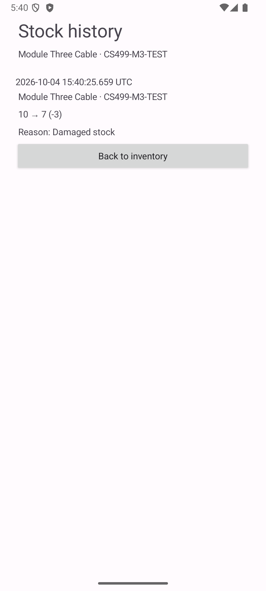

Review before saving
See the current and proposed quantity before confirming. Cancel leaves storage unchanged; an obsolete preview must be reviewed again.
Read the design narrative →Java · Android · SQLite
Three enhancements to one real application: review a stock change, find what needs restocking, and explain how a quantity changed.
The original app provided local accounts, a shared inventory, and optional low-stock SMS alerts. It changed quantities immediately, ordered low stock by raw quantity, and stored no movement history. The final app keeps that foundation and improves the same stock-management workflow at three layers.
See the current and proposed quantity before confirming. Cancel leaves storage unchanged; an obsolete preview must be reviewed again.
Read the design narrative →Show a short list ordered by stockout status and relative stock coverage, without sorting every eligible item.
Read the algorithms narrative →Commit the new quantity and movement history together. A failed history insert rolls back the quantity update.
Read the database narrative →| Operation | Original | Enhanced |
|---|---|---|
| Adjust quantity | Immediate increment or decrement | Signed change, reason, preview, confirmation, stale check |
| Choose restock items | Low-stock rows ordered by quantity | Top k by stockout and relative coverage, deterministic ties |
| Explain a change | Current quantity only | Persistent before/after quantities, reason and UTC time |
| Upgrade stored data | Schema version 1 | Version 2 preserves accounts and stock; history starts empty |

A test trigger rejects the history insert after the quantity update. The transaction leaves ten units and no movement; after removing the trigger, the same operation saves fifteen units and one record.
Read the rollback resultThe populated version-1 migration test preserves authentication, item IDs, quantities, and thresholds. It does not invent historical movements.
Read the migration result · Read the query-plan comparisonNine unit tests and twenty Android tests passed in the October 4 verification. The narratives explain their scope. Android lint had no errors and retained warnings.
Local macOS ARM64 / JDK 21 benchmark, ten warmups and twenty-one measured runs per algorithm. These are median selection times after loading the inventory, not Android or database performance. Both algorithms returned the same IDs and order for each benchmark case before timing; unit tests also used an independent BigInteger ordering oracle.
| Loaded items | Requested k | Heap median | Full sort median |
|---|---|---|---|
| 100 | 5 | 0.014125 ms | 0.024750 ms |
| 100 | 100 | 0.013042 ms | 0.011667 ms |
| 100,000 | 5 | 0.496875 ms | 6.780959 ms |
| 100,000 | 100,000 | 8.716791 ms | 6.852250 ms |
The heap helps when the requested list is short. Full sorting was faster when requesting all 100,000 items. Download all nine measured cases.
The inventory is local and shared. Movement history has no employee attribution and is not tamper-proof. Deleted-item movement snapshots remain in SQLite, but the app has no separate archive screen. SMS delivery was not exercised by the capstone tests.
Start with the recorded plan, compare the source, then read the narrative for each enhancement. The public source copies use my handle in place of personal author information; application logic is unchanged.
Compare sourceCode review videoOriginal source · ZIPEnhanced source · ZIPComplete artifact and evidence · ZIP| Outcome | Evidence and limits |
|---|---|
| Collaboration | Pre-implementation review, explicit result contracts, preserved baseline, setup instructions, and discussion of stakeholder decisions in the self-assessment. Individual coursework, not a team-project claim. |
| Communication | Oral code review, readable narratives, before-and-after comparison, source and emulator evidence. |
| Computing solutions | Exact ranking rule, heap/full-sort comparison, randomized checks, and indexed query-plan evidence. |
| Computing tools and practice | Android lifecycle handling, cumulative integration, schema migration, and 29 recorded tests. |
| Security mindset | Validated changes, stale-command rejection, bound database values, rollback checks, and explicit authorization/history limits. |